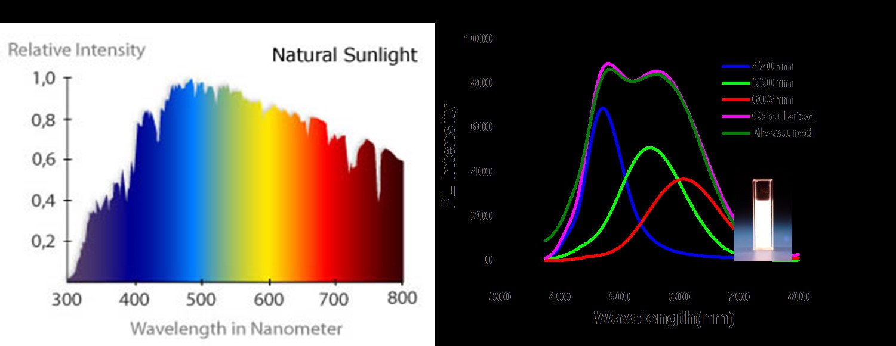

Research project---polymer microsphere with quantum dots for suspension arrays
introduction
Monodisperse polymeric microspheres have diverse applications in biomedical fields due to their excellent properties such as large specific surface areas, strong absorbability and ability to be modified by various functional groups. Quantum dots (QDs), which possess unique optical properties and outstanding photochemical stability, have been regarded as one of the most promising biolabeling materials. The QD-polymer composite microspheres received a great deal of attention, since they could combine advantages of both materials.
purpose
1) preparation of mon-dispersed QD-polymer composite microspheres of PSMA
2) applying gold nanoshell onto the surface of the polymer microspheres to enhance the signal of fluorescent reporter molecules that are linked on the surface of the microspheres by the substance to be detected
3) synthesize gold nanoparticles of different sizes and shapes to enhance the fluorescent signals of different peaks
results
1) Successfully prepare polymer microspheres(magnetic and non-magnetic) with near-infrared emitting quantum dots, conjugate antigen/antibody for detection
2) Successfully link gold nanoparticles(around 20nm) seed onto the surface of microspheres, and gold seeds can grow to 100nm within 2 hours
3) Prepare gold nanorods with different aspect ratios(on going)

1)PSMA microsphere with gold nano seeds |

2)gold nano seeds grown to 100nm |

3)detailed picture of gold nanoparticles on the surface |
University Student Innovation Program--the preparation of quantum dots and the application in bioimaging
introduction
MQuantum dots (QDs) or semiconductor nanocrystals are of great interest to fundamental studies and potential applications as fluorescent probes, fluorescent biosensors, lightemitting diodes (LEDs), and solar cells. Recently, introducing transition metal ions into the intrinsic QDs has been widely explored because of the unique optical properties of the d-dots. The d-dots not only retain nearly all the advantages of intrinsic QDs but also possess new properties such as the enhancement of the thermal stability, the reduction of the chemical sensitivity, and the elimination of the self-quenching and re-absorption due to enlarged Stokes shift caused by absorption/energy transfer. Mn2+:ZnSe QD is one of the most popular d-dots because of its cadmium free, remarkable magneto-optical properties and the long fluorescence lifetime of the Mn2+ emission suitable for broad applications. The cadmium-free doped quantum dots prepared in aqueous environment are great materials for bio-application because of its low toxicity and hydrophilic nature.
purpose
1) Prepare Mn:ZnSe/ZnO quantum dots with high efficiency via aqueous route
2) Apply in bioimaging without killing the cells
results
1) exhibit strong emission at a wavelength of about 580 nm with the quantum yield as high as 31%, which is the highest reported value via the aqueous route so far
2) exhibit upconversion emission at the excitation of 800 nm
3) gain access to the cell nucleolus, demonstrating their promising broad applications as fluorescent labels

1)the enhanced intensity by post-processing |

2)application in nuclear marking |
? Research project--Doped ZnSe quantum dot for white light-emitting diodes
introduction
Self-quenching and reabsorption problem and phosphor scattering problem are two main problems of quantum dots application in WLED. Doped quantum dots coated with a silica cell may be a solution. Doped QDs not only retain nearly all the advantages associated with intrinsic QDs but also possess new properties such as enhanced thermal stability and reduced chemical sensitivity. Doped QDs also have enlarged Stokes shifts due to absorption/energy transfer, eliminating the previously mentioned self-quenching and reabsorption problems. Besides, Additional surface treatment of QDs, in particular coating of QDs with a silica shell, can help prevent aggregation. Since the refraction index of epoxy resin (~1.5244) is between that of
silica(~1.4245) and ZnSe(~2.8946), it can be expected that a transparent doped ZnSe QDs@SiO2/epoxy composite could be developed by adjusting the ratios of the components, allowing the composite to act as both a light conversion and encapsulant material while simultaneously preventing aggregation of the QDs.
purpose
1) Fabricate WLED without self-quenching effect and the reabsorption problem
2) Adjust the refractive index of quantum dots and reduce the energy loss by coating with a silica shell, and fabricate successfully high-performance WLED
results
1) Successfully prepare Mn:ZnSe and Cu:ZnSe quantum dots with three colors, and there are few overlaps between the PL and UV-vis spectra of the Cu and Mn doped ZnSe with different emission wavelengths.
2) Coated quantum dots with silica and reduce the refractive index of quantum dots and epoxy resin by 93%
3) fabricate successfully high-performance WLED
| 
1)few overlaps between the PL and UV-vis spectra |

2)highly-transparent LEDs |
Imaging voltage in eukaryotic cells
Archaerhodopsin 3 and its mutants show voltage-sensitive fluorescence in eukaryotic cells. Our current-generation best voltage indicators are QuasAr1 and QuasAr2. QuasAr1 is faster (< 50 microsecond response time) compared to QuasAr2 (~1.2 ms response time). QuasAr1 is also ~3-fold brighter than QuasAr2. But QuasAr2 shows greater voltage sensitivity (90% per 100 mV) compared to QuasAr1 (30% per 100 mV). We use QuasAr2 for most applications, except when extreme temporal precision is necessary. Neither mutant generates a photocurrent. Please remember that all of the microbial rhodopsin proteins require added retinal to function properly, although in many systems (e.g. mammalian neurons or cardiomyocytes) ambient retinal is sufficient to produce good fluorescence, and it is not strictly necessary to supplement with retinal.
Both proteins are *extremely* dim, and require high intensity red laser illumination, a high NA objective, and an EMCCD camera for detection.
Here is an annotated list of our plasmids on Addgene:
Cell culture for PROPS
Grow
E. coli to early-log phase (OD600 = 0.3 ? 0.4) in 50 mL of LB medium in a shaking incubator at 33 C. Add inducer along with all-trans retinal (5 microM from a 20 mM stock in ethanol) and conduct further growth in the dark. Harvest cells after 3.5 hours and wash with 30 mL of minimal medium (1x M9 salts, 0.4% glucose, pH 7). Resuspend cells in 5 mL minimal medium and use immediately
or store at 4 C for later use.
PROPS does not localize to the plasma membrane in eukaryotic cells.
Cell lines
We have a, E. coli cell line for simultaneous imaging of PROPS and flagellar torque. Cell culture and preparation conditions described in the
Supporting Material of our paper on
Electrical Spiking in Escherichia coli Probed with a Fluorescent Voltage-Indicating Protein.
| Strain |
Genotype |
PROPS plasmid |
Antibiotic |
| JY29 |
Thr-1 araC14 leuB6(Am) fhuA31 lacY1 tsx-78 λ- eda-50 hisG4(Oc) rfbC1 rpsL136 xylA5 mtl-1 metF159 thi-1 ∆fliC
Sticky fliC allele was cloned into pACYC184 (CmR) under the native promoter of fliC |
JK2 |
Cm, Amp |
We also have a line of HEK cells stably expressing NaV 1.3 and Kir 2.1. These cells generate spontaneous electrical spikes when cultured to confluence. Here are instructions on culturing spiking HEKs. See: J. Park , C.A. Werley, V. Venkatachalam, J.M. Kralj, S.D. Dib-Hajj, S.G. Waxman, A.E. Cohen, Screening Fluorescent Voltage Indicators with Spontaneously Spiking HEK Cells, PLoS ONE, 8, e85221, 2013.
©2012
Adam E. Cohen